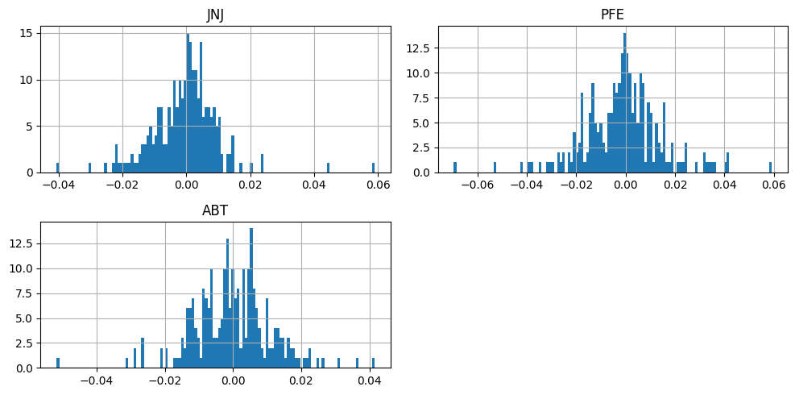
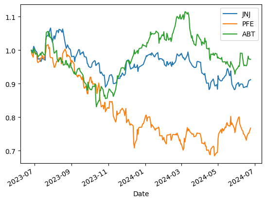
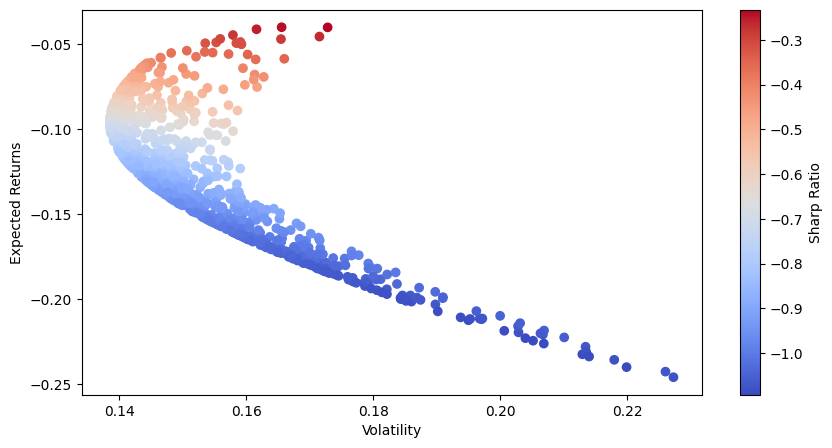
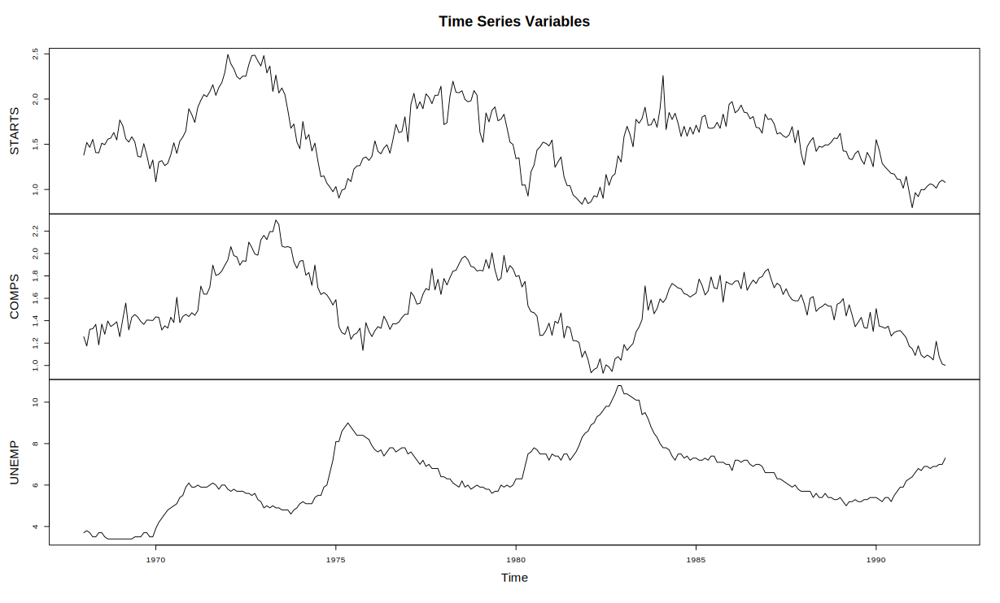
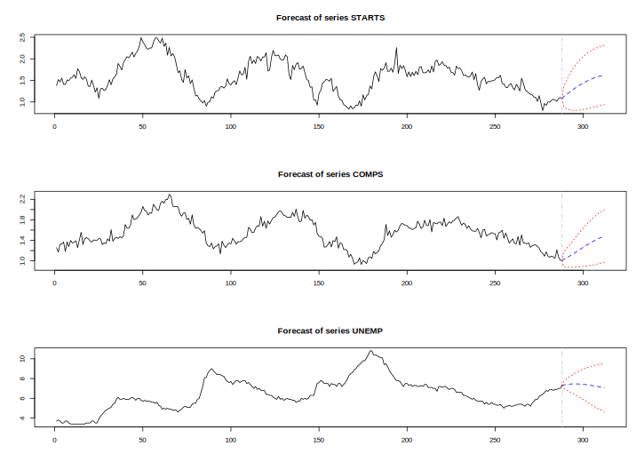

Economics & Data Portfolio | Risk, Modeling, and Analytics
📊 CAPM Model: Pfizer vs. S&P 500
Regression ran showed a negative alpha, meaning that the investment has underperformed compared to SML
View R script
📈 Monte Carlo Simulation for Healthcare Stocks
Distribution of Simulated Portfolio Returns

This section explores the benefits of using logarithmic returns in normalizing time series data for
analyzing Abbott Laboratories (Abbott), Pfizer Inc. (Pfizer), and Johnson & Johnson (J&J) stocks.
Normalized Price Paths of Healthcare Stocks

Each stock's daily adjusted closing prices were divided by the initial price to normalize the data.
The normalized stock prices were plotted to visualize their performance relative to their initial values
Sharpe Ratio Distribution

Random weights are assigned to each stock in the portfolio, meaning random weights are initialized to
distribute investment across the three stocks without any predetermined bias.
Normalizing Weights to Sum to 1.0. Weights are rebalanced to ensure they sum up to 1.0, representing a fully invested portfolio.
Expected Portfolio Return and Volatility. Calculate the expected portfolio return based on the mean log returns and assigned
weights as well as determining the expected volatility of the portfolio using the covariance matrix and assigned weights.
The Sharpe ratio quantifies the portfolio's performance relative to its risk. A higher ratio indicates better risk-adjusted returns.
View Jupyter Notebook
🏠 VAR Model: Housing Starts & Unemployment
Time Series Variables

Creating the VAR (Vector Auto-Regressive) Model
Multivariate Series Forecast

Forecast COMP, STARTS, and UNEM 24 periods ahead with optimal lag order 2.
View R script